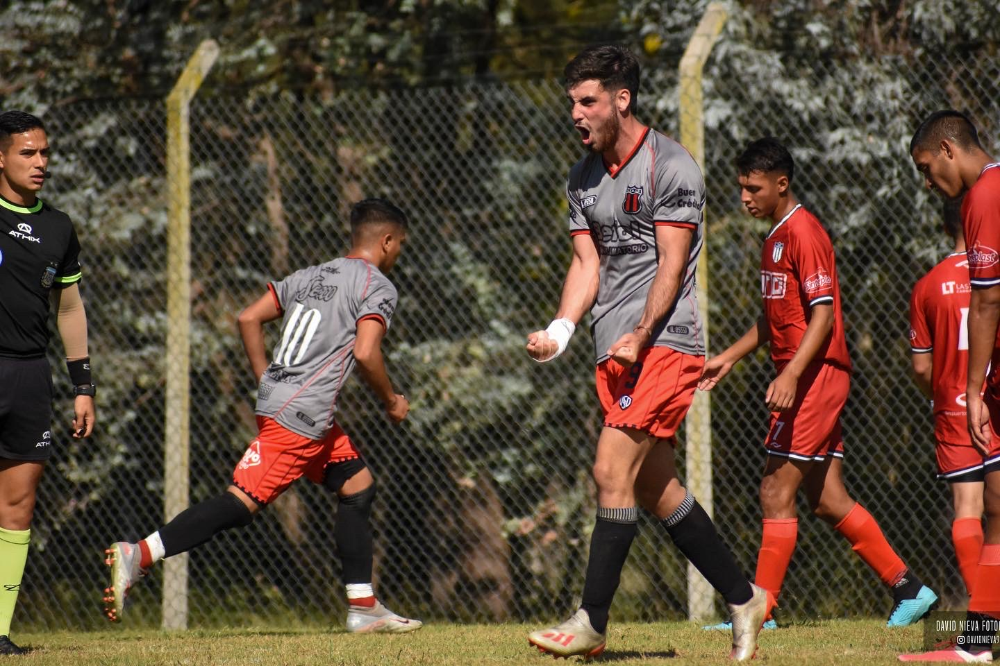

Student-Athlete Profile
Striker | Lynn University Men's Soccer
Player Attributes
I play as a forward with a focus on physical presence and clinical finishing. My game is built on consistency, tactical intelligence off the ball, and determination.
- Clinical Finishing
- Off-the-ball Movement
- Physical Strength
- Tactical Discipline
- Team Leadership
Photo Gallery



Career History
| Period | Club / Team | Achievements |
|---|---|---|
| Aug 2024 – Present | Lynn University | National Champion (NCAA D2) Contributing Striker |
| 2024 (Jan - Jul) | Barrancas de Belgrano | Top Scorer (Apertura Tournament) |
| 2012 – 2023 | Defensores de Belgrano | Reserve Captain Professional Debut (2023) |